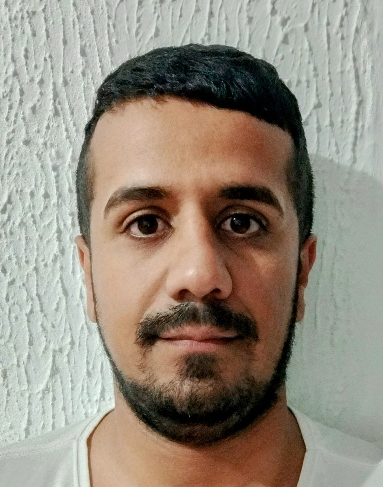

Filipe Silva

Resumo
I am a dedicated and hard-working person, I always try to give my best to those who place their trust in me.
Education
- Art graphics - Senai (2011-2012)
- Analysis and Systems Development - UniRitter(2023-2026)
Work experience
Rede Pampa de Telecomunicações
- rotating machine programming
- Adjusting colors in images
Jornal do Comércio
- rotating machine programming
- Adjusting colors in images
Skills
- Front-end;Javascript, Html, Css, React
- Back-end; Python, C++, Django
- Database; My Sql, Postgree
Awards and Certifications
- Python 3 complete from basic to professional - Udemy 2024
- web Development bootcamp - Udemy 2024
Other
Contact Me